Как запустить фокус-группу на 1,5 млн всего за 2 недели без активных продаж, прогревов и бесплатных консультаций с помощью технологии UpStart
Из этой статьи Вы можете узнать о технологии, которой пользуются передовые компании, такие как Apple, Google, Microsoft для создания своих продуктов-бестселлеров.
Ключевые тезисы статьи:
- Фокус-группа — это обязательный шаг перед официальным запуском продукта
- Запуск фокус-группы можно сделать на миллион всего за 3 недели
- 600 000 рублей за 2 дня и 50% конверсия в оплату с созвона, даже когда тебя видят впервые в жизни
- Инструменты сами по себе не работают, если нет ключевого секрета, который используют Apple
Что такое UpStart?
Метод, основанный на секретной технологии американских маркетологов-миллиардеров по быстрому тестированию продуктовых и маркетинговых гипотез.
Который позволяет сделать миллион за 3 недели на фокус-группе:
- ❌ без запусков и прогревов
- ❌ без танцев в соц. сетях
- ❌ без личного бренда
- ❌ без готового продукта
- ❌ без воронок и отделов продаж
- ❌ без команды и расходов
- ❌ без рекламного бюджета
- ❌ без вебинаров
- ❌ без продающих текстов
- ❌ без сложных схем и технарства
Кому подходит технология
Экспертам и консультантам, которые хотят запустить своё наставничество, личную практику или групповую программу и выйти на стабильный доход от 1 млн рублей.
Продюсерам, которые хотят за 1–2 недели протестировать нишу и эксперта без лишних расходов и команды, заработать от 1 млн на тесте гипотезы и принять решение идти дальше в работу или нет.
Владельцам онлайн-школ, которые хотят запустить курс или премиальный продукт, стабильно набирать на него учеников и зарабатывать от 1 млн рублей на курсах или премиальных программах.
Специалистам и фрилансерам, которые хотят запустить новую услугу, за 1–2 недели набрать клиентов и выстроить очередь на 1–2 месяца вперёд, настроив системное привлечение клиентов для создания стабильного дохода.
Как обычно происходит запуск нового продукта
- Прошёл курс, написал 20 листов описания ЦА, сделал анализ конкурентов, написал распаковку экспертности на 100 листов.
- «О, у меня гениальная идея, я знаю, что им нужно!» Забыл про пункт 0.
- Нашёл маркетолога или продюсера — плачу ему зарплату (100–300к).
- Придумал продукт, написал программу (2–3 недели).
- Лендинг, прогрев, контент-план; вспомнил про пункт 0, но не понял как применять, забил на пункт 0 (50–150к и 1–3 недели).
- Вебинар продающий (50–100к и 1–2 недели).
- Ведение прогрева и запуска на 2–5 недель (50–150к зарплата + доп. расходы).
- Трафик (100–200к).
- Вебинар и попытка вдолбить аудитории, что им нужен продукт.
- Нет продаж, или их совсем мало, или купили только свои. Слив денег.
- Маркетолог/продюсер взял деньги и исчез.
- Претензии маркетологу/продюсеру, что купили только свои, отработал хреново, суды.
Вот так выглядит 99% запусков!
Меняется только схема (воронка, вебинар, бот, соцсеть), а всё остальное именно так и происходит. И в этой схеме неизбежен слив денег от 300к до 2–3 млн.
Плюс выгоревший до угольков эксперт, которому срочно нужен отпуск на 2–3 месяца или реабилитация навсегда.
Я проходил через это, знаю, о чём говорю.
Я был экспертом, взял себе продюсера. При этом работы стало в 2 раза больше. Большая команда, огромные расходы. Даже при большей выручке я не зарабатывал и уходил в минус — тот самый случай, когда мой ассистент зарабатывал больше меня!
В какой-то момент я понял, что, работая один, за 1 запуск делал больше личного дохода, чем за год с продюсером. Каждый созвон был полон идей, и все уходили воодушевлённые.
Создавали несколько разных продуктов, пытались их развивать, переключались с одного на другой. Но за год мы не ушли далеко. И стабильной системы по зарабатыванию денег так и не выстроили.
В итоге: минус 2 000 000 рублей, 6 месяцев потерянного времени, депрессия и выгорание.
Где была ключевая проблема?
Она не в продукте, не в аудитории. Она появляется в голове эксперта в момент, когда продукт придуман… И именно когда ГИПОТЕЗА:
- идёт в работу,
- без тестирования,
- без подтверждения.
В результате мы тратим огромный бюджет на чью-то «гениальную» идею.
Вспомним, сколько стартапов прогорают? 9 из 10?
Это происходит потому, что люди придумывают ещё один «гениальный» способ чесать свою спину ещё одной «необходимой» палкой — и сразу заказывают производство этих палок на миллионы.
Но если по моей технологии проверить идею до её реализации, то можно заработать от 1 млн рублей на тесте и сборе фокус-группы ещё до того, как продукт произведён и создан. Это снимает все риски и не требует ни копейки вложений.
Хотели бы вы получить 1 млн или больше на реализацию своей идеи и уже тратить деньги из заработанного, а не из кармана?
Я проверил больше 146 технологий (дальше устал считать), работающие собрал в систему из 5 шагов, ведущих к 100 млн+. Если ещё не знакомы с ней, то послушайте подкаст в моём телеграмм-канале.
Как заработать миллион за 3 недели на новом продукте, даже если вы не умеете продавать и нет аудитории
И что, технология действительно работает? (скептический читатель)
Я сам активно применяю эти технологии, а не только обучаю им. Ниже делюсь тем, что я делал последние 2 месяца. Этот кейс был опубликован в 17 выпуске журнала «Хайлайты инфобизнеса».
Я решил взять 2 проекта в продюсирование. Выложил сторис об этом, провёл 17 собеседований с экспертами и выбрал 2 проекта всего за 2 дня. Одним из них был проект по архетипам.
Начали чётко по моей технологии
Шаг 1. Распаковка сильного продукта
Созвонились с экспертом, сделали распаковку сильного продукта, определили продуктовую лестницу проекта. Я сформировал гипотезу для быстрого старта.
У эксперта был единый для всех курс по архетипам. Я прописал лестницу развития клиента до профессионального владения системой архетипов, чтобы зарабатывать на этой услуге. И так как у курса уже были выпускники, я решил начать с монетизации профессии.
Сразу встретил скепсис и первое возражение со стороны эксперта:
- У меня нет нужной целевой аудитории,
- все пришли на тему отношений, никому не нужна профессия по определению архетипов, никто не хочет на этом зарабатывать,
- и платить за обучение они не будут,
- надо срочно новую аудиторию приводить!
Я выслушал, но просто продолжил следовать своей же технологии.
Шаг 2. Создал лавину заявок
Собрал «вкусное» обещание и опубликовал везде (сторис, пост) и сразу же получил отклик заинтересованных людей.
Хотя эксперт сомневалась, что кто-то купит премиальный продукт, сетовала, что аудитория не платёжеспособная, что они и за 2к продукт не покупают, что никто на тему финансов не откликнется, так как пришли на тему отношений и т.д.
Но я уже в курсе, что проблема не в аудитории, а в работе с ней. А также я знаю, что только 10% гипотез из головы подтверждаются. В итоге после проверки моей гипотезы с одной сторис получаем 17 заявок.
Шаг 3. Нашли первых последователей
Провёл с каждым из откликнувшихся созвон по своей технологии.
Так как эксперт не верила в результат и считала созвоны пустой тратой времени, то она отказалась проводить их вместе со мной.
В итоге я проводил созвоны сам, один.
Только представьте: люди подписаны на эксперта-женщину, на созвон звала она, а пришли и увидели левого бородатого мужика! Не самое лучшее начало созвона, да?
Но тем не менее, смотрите, какие я получил результаты!
Результат:
600 000 рублей за 1 неделю с конверсией 50%
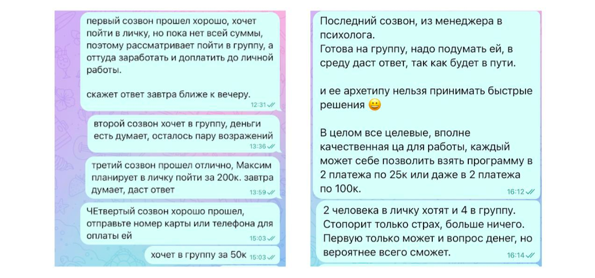
Первый же созвон закончился желанием клиента купить продукт за 200к.
Второй созвон — продукт за 50к.
Итого, спустя 12 созвонов по моей технологии (5 человек не дошли), получаем 6 продаж на сумму 600к (2 по 200к и 4 по 50к).
Решили остановиться на этом, чтобы отработать продукт на малой фокус-группе. Если бы доработали и привели ещё 2-х человек в личную работу или 8 в группу, то мы бы сделали 1 000 000 руб. После такого быстрого и фееричного теста идеи эксперт в шоке пишет мне:
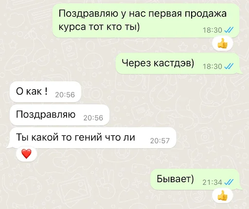
У большинства экспертов в голове точно такие же «тараканы» сидят, которые мешают получить результат. А я уверен, что могу помочь классному эксперту за 1–2 недели собрать людей на новый продукт и сделать на нём от 1 млн.
ВОТ «тот самый» кейс на 1,5 млн рублей за неделю
Алексей Жиганов, специалист по монтажу рилсов, записи видео, опыт на ТВ более 10 лет. Была своя школа онлайн-профессий, сейчас занимается конкретно темой рилсов.
Расстался с девушкой, преддепрессивное состояние и надо что-то поменять в жизни, чтобы не уйти в глубокую депрессию.
Запрос: переехать на Бали, для этого заработать денег за короткий срок. Хочет больше свободы и лёгкости в жизни.
Нет понимания, как заработать большую сумму со своими активами в виде блога:
- аккаунт в инстаграм на 3400 подписчиков,
- средний доход 50–100к в месяц на запусках небольших продуктов,
- средний охват сторис 500–700 человек.
Ситуация ДО
Был опыт в Тик-Ток, где набрал более 100к подписчиков, но затем аккаунт забанили и начал с нуля в рилс. За 2–3 месяца набрал 3400 подписчиков, записал пару курсов недорогих, и благодаря им начал монетизацию блога 50–100к в среднем.
Пока происходил этот переход из тик-тока в инсту, доход сильно просел, долгое время было много работы и мало денег.
Доход рос достаточно медленно, это повлияло на отношения. В результате разъехались, девушка вышла на работу, постепенно в отношениях настал кризис. В один момент было принято решение расстаться.
Это был болезненный опыт, пропал смысл жизни и смысл карьерного и финансового роста. В какой-то момент появилась простая мысль — а что если поехать на Бали? Учитывая, что московская зима ещё глубже вводила в депрессивное состояние.
Самая главная боль — чтобы заработать деньги, надо придумать прогрев и какой-то способ продать свой продукт. Иногда придумывание прогрева затягивается до 2–3 недель, чтобы понять, как сделать, чтобы сработало. А потом, когда выкладываю прогрев, очень мало просмотров — по 100–200 человек и нулевая реакция.
Я начинаю грустить, ухожу часами гулять, чтобы как-то вернуть своё состояние. Ощущение зря потраченного времени, и денег не заработано.
Вот такие были охваты в обычные дни:
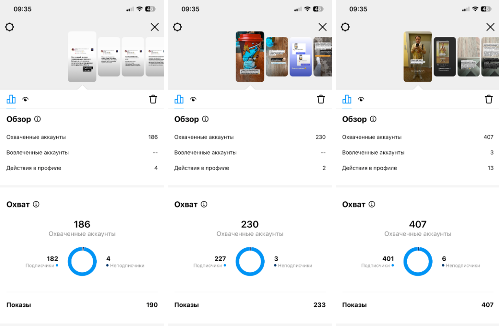
Делает регулярно рилсы, есть навык записи видео, быстрой записи курсов. Уже есть 3 курса в записи.
Нет навыка продаж, не любит делать продажи, нет воронок продаж, нет понимания, что продавать на высокий чек, кроме личного наставничества и курсов по 3000р.
Большой вызов
Когда получил приглашение от Алишера помочь сделать совместный запуск на миллион, сначала было сомнение. А получится ли, учитывая, что никто не покупал на высокий чек — это большая редкость.
Но было доверие к Алишеру за счёт его большого опыта, постоянных кейсов и результатов, которые он делает каждые 2–3 месяца. Стало интересно попробовать, тем более что я ничего не теряю.
Плюс Алишер вдохновил своим видением, как это может быть. Плюс уже был опыт совместных запусков и всё получалось.
Вот что было сделано
1. Выложили сторис по «Технологии формулировки большого обещания в 1 сторис» Алишера, и она набрала 1290 просмотров из 3400 подписчиков (буквально больше 50%), из которых 105 человек откликнулось (около 10%) на предложение.
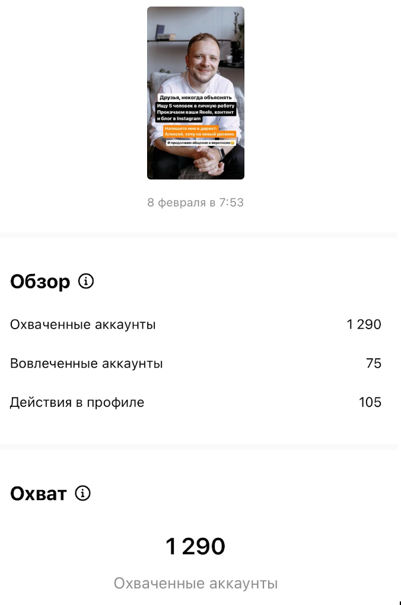
2. 116 заявок получил в личку — кто-то, видимо, отправлял друзьям мою сторис.
3. Из 116 человек дошло до созвона 40 человек.
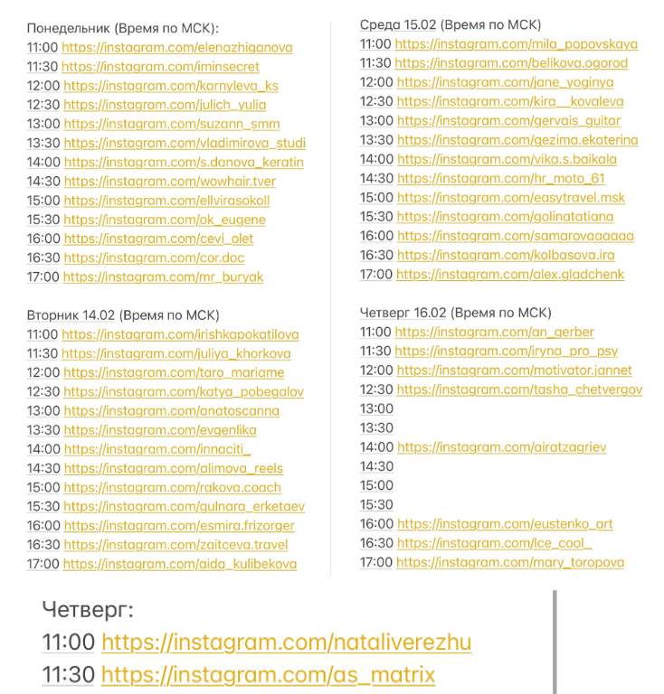
4. Из 40 человек по технологии Алишера «Продавай как котик» продали на 150 000 рублей (тарифы были по 40к, почти все платили в 2 частями по 20к).
5. Дальше опубликовали 2 рилса по такой же системе и набрали по 2200 просмотров + ещё 1 сторис, и получили ещё 43 заявки, из них 30 созвонов, и провели мероприятие по технологии Алишера «ROCKSTAR».
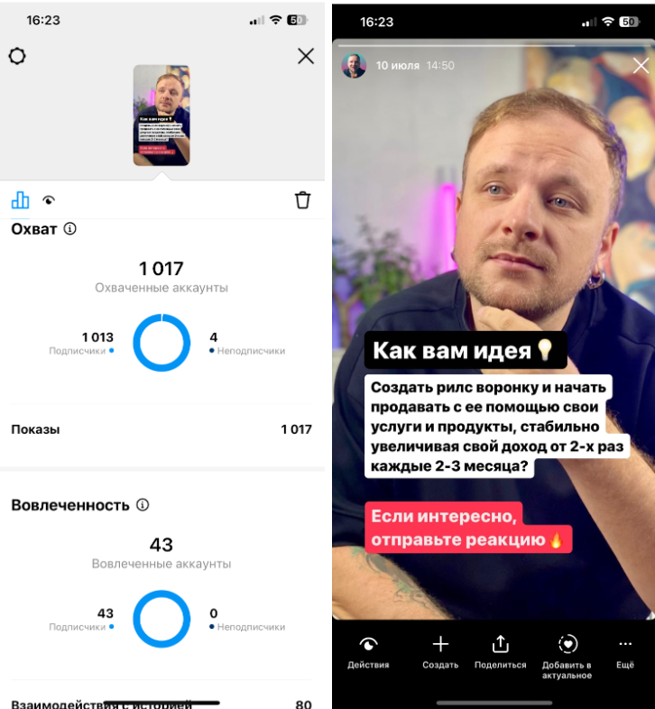
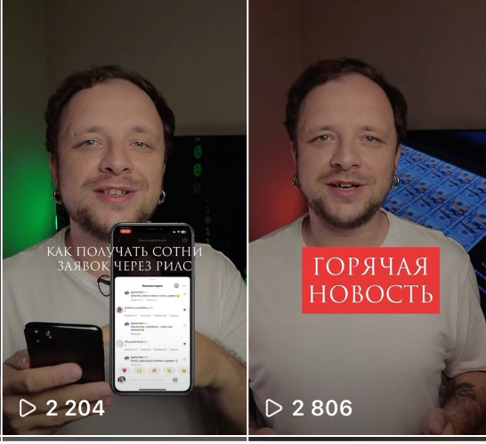
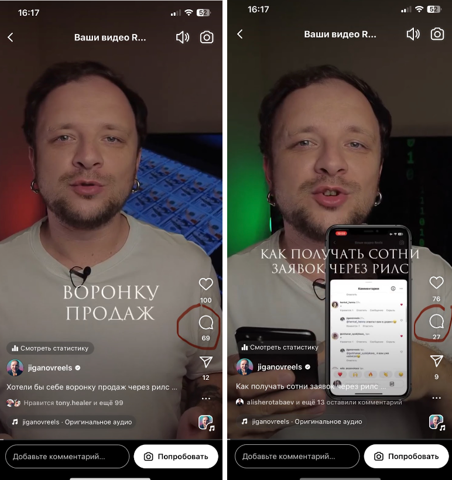
6. Была 1 продажа премиум-формата на 900к и ещё допродажи группы. В итоге в кассе 1,5 млн рублей (оплаты в рассрочку внутреннюю), и через пару месяцев взяли малую группу из 5 человек для личного ведения ещё на 350к.
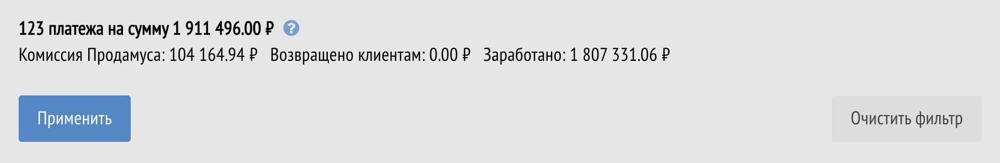
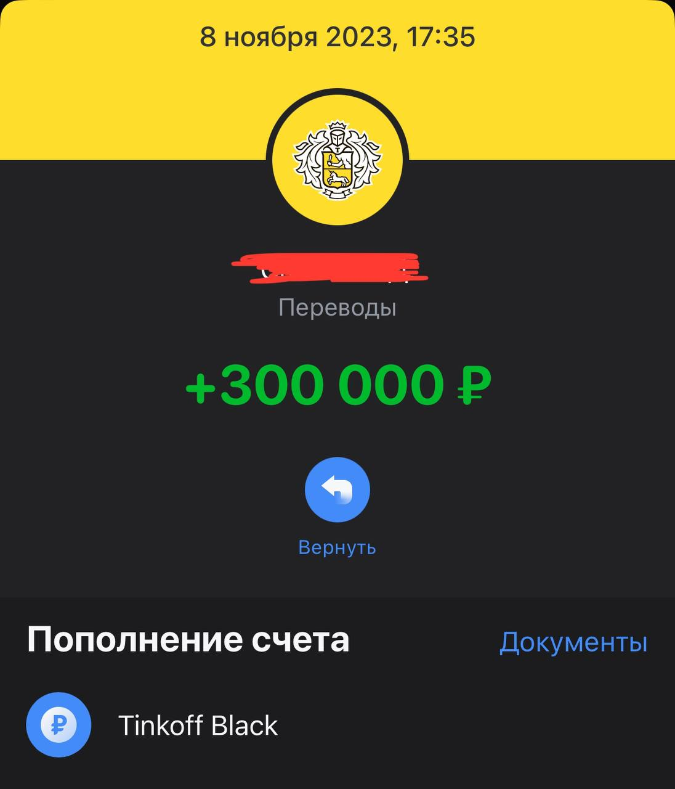
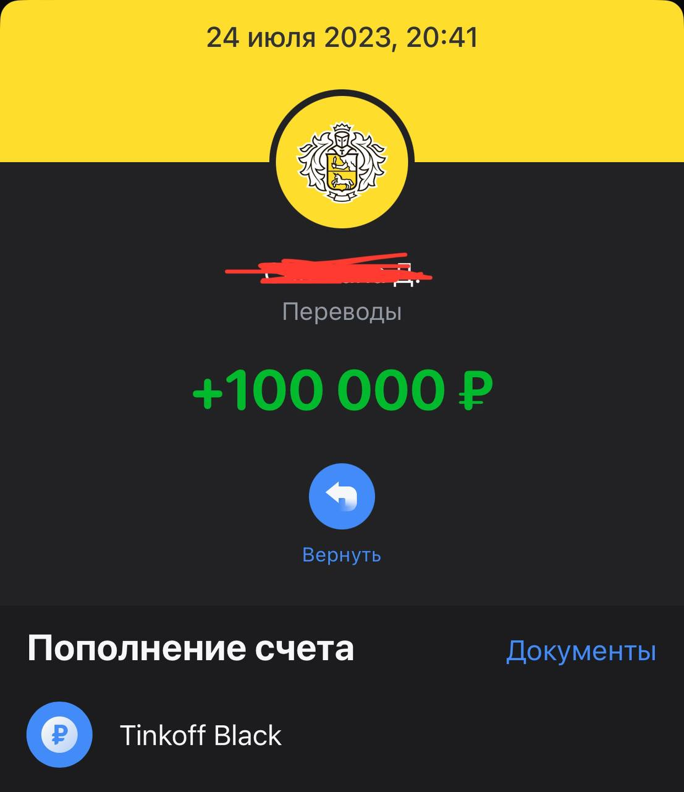
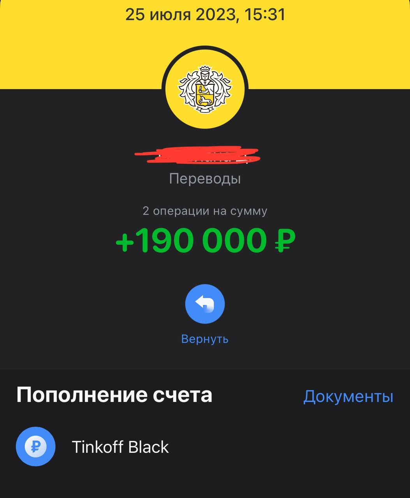
7. Потом попробовал сам протестировать идею, записал 1 рилс по системе, получил 2 заявки и заработал 55 000 рублей.
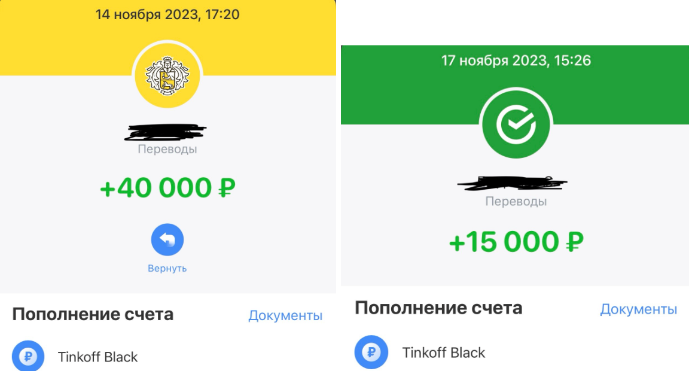
В результате (ПОСЛЕ)
- Переезд на Бали
- Запуск фокус-группы на 1,5 млн рублей
- Больше кайфа в жизни
- Стал увереннее в себе и своём состоянии
- Стал легче относиться к блогу и деньгам
- Нашёл простой и быстрый способ зарабатывать деньги с блога и быстрый способ тестирования своих идей продуктов
Благодаря этому
- Нашёл классных людей, которые пришли в фокус-группу (психологи, специалист по архетипам, распаковщик и т.д.)
- Эти специалисты захотели помочь безвозмездно, и всего за 2–5 сессий Алексей избавился от преддепрессивного состояния
- Остался навык быстро зарабатывать деньги, за счёт чего Алексей вышел на доход от 200к рублей
Надо быть проще, не париться так сильно, как я парился. На самом деле, чтобы зарабатывать деньги, не надо делать сложные воронки или большие прогревы — можно всего 1 сторис или 1 рилс получить заявки и заработать деньги.
[битая ссылка — блок не загрузился из Notion]
[битая ссылка — блок не загрузился из Notion]
Узнай секрет Apple, без которого не работает ни один маркетинговый инструмент
Если вы хотите получить такой же классный результат, как Алексей Жиганов, тогда вот первый шаг, который вы можете сделать:
Внедрить ключевое изменение в своём подходе к проекту и посмотреть видеокурс «Главный секрет успеха Apple в создании магнетического бренда» (битая ссылка — домен panteonacademy.ru недоступен).
Кайфовые посты и материалы, которые поменяют вашу жизнь уже сейчас (в моём ТГ-канале):
Подкаст: Ключевые факторы лёгкого запуска фокус-группы и полный SoldOut
Программа доминирования, или почему, подстраиваясь под клиента, мы теряем свой бизнес
- [битая ссылка — bookmark-блок Notion не отдал данные]
- [битая ссылка — bookmark-блок Notion не отдал данные]
- [битая ссылка — bookmark-блок Notion не отдал данные]
- [битая ссылка — bookmark-блок Notion не отдал данные]
- [битая ссылка — bookmark-блок Notion не отдал данные]
- [битая ссылка — bookmark-блок Notion не отдал данные]
- [битая ссылка — bookmark-блок Notion не отдал данные]